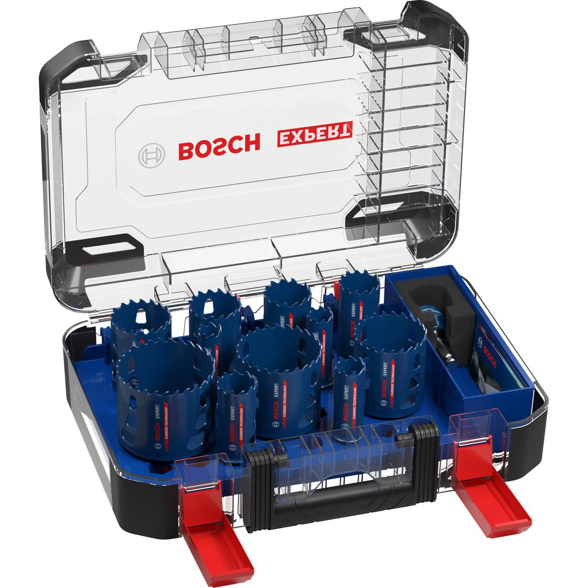

2608900448


| Set description |
Set contents:
11 x EXPERT Tough Material hole saws (20, 22, 25, 32, 35, 40, 44, 51, 60, 68, 76 mm)
1 x Power Change Plus Adapter Hex 11 mm
1 x HSS-G pilot drill bit 105 mm
1 x Carbide pilot drill bit 105 mm |
| Packaging type |
Cassette without any type of suspension |
| Pack quantity |
11 Pcs |
| Minimum order quantity |
1 Pcs |